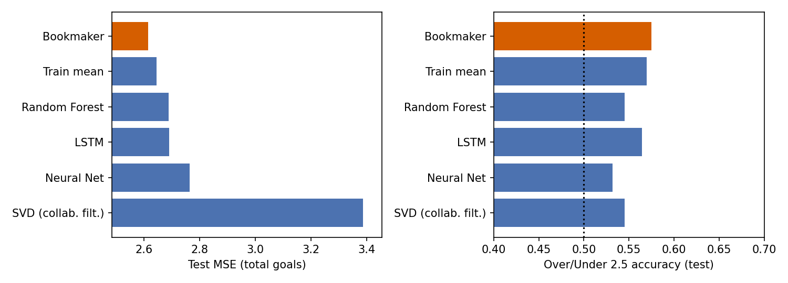

UE24CS352A Mini-Project, Team 6: Shashank Vinayak (PES1UG24CS435), Shubashitha G (PES1UG24CS450)
Bucquet & Sarukkai (Stanford CS229, 2018) predict the total points in an NBA game and compare against the sportsbook's Over/Under line. We replicate their pipeline (Random Forest baseline, SVD collaborative filtering, neural network, LSTM) on English Premier League football, where results and bookmaker odds are freely available. Task: predict total goals in a match and ask whether the prediction is as good as the bookmaker's Over/Under 2.5 market.
football-data.co.uk, 11 EPL seasons (2014/15–2024/25), 4,180 matches: goals, shots, shots on target, corners and market-average Over/Under 2.5 odds. After requiring 5 prior matches for both teams, 4,031 remain. Time-ordered split like the paper: train 2014/15–2022/23 (3,283), validation 2023/24 (374), test 2024/25 (374). Odds are never used as features; they are the benchmark only.
Features (32, only from earlier matches, verified by a leakage test): for each team the last 3 and 5 matches (goals for/against, shots, shots on target, corners), season-to-date averages (the paper's opponent-strength idea) and days of rest (fatigue). The LSTM instead reads each team's last 5 matches as a sequence. Models: Random Forest; SVD collaborative filtering (home×away goals matrix, low-rank hard-impute, rebuilt per match from prior matches); fully connected net (32-32-16-1, dropout, weight decay, early stopping); LSTM (one per team, concatenated into a linear head). Hyperparameters were chosen by small grids on the validation season only. Benchmark: the bookmaker's margin-free P(over 2.5) is converted into an implied expected-goals value (Poisson), so MSE is comparable; model predictions are converted to P(over 2.5) the same way.
Python, pandas, scikit-learn, PyTorch. src/data.py (download/clean), src/features.py (leakage-safe features and sequences), src/models/ (four models),
src/train.py (training and tuning), src/evaluate.py (MSE, MAE, Over/Under accuracy, Brier score, flat-stake betting ROI, figures),
app/demo.py (Streamlit demo: pick a test match, see every model's prediction against the bookmaker line), tests/test_leakage.py.
| Model | MSE | MAE | O/U 2.5 acc. | Brier |
|---|---|---|---|---|
| Bookmaker | 2.614 | 1.294 | 57.5% | 0.242 |
| Train mean | 2.645 | 1.292 | 57.0% | 0.248 |
| Random Forest | 2.689 | 1.293 | 54.5% | 0.249 |
| LSTM | 2.691 | 1.305 | 56.4% | 0.249 |
| Neural network | 2.764 | 1.318 | 53.2% | 0.251 |
| SVD | 3.388 | 1.488 | 54.5% | 0.271 |

No model beats the bookmaker on MSE or Brier score, and none is clearly better than predicting the historical average; flat-stake betting ROI is around zero or negative. This mirrors the paper (neural net MSE 369.8 vs sportsbook 320.7; 51.5% correct side). Goal counts are low and very noisy, so rolling form statistics carry little signal, and the bookmaker already prices in information we lack (injuries, line-ups, team strength). With 374 test matches the accuracy standard error is about ±2.6 points, so differences of 1–3 points are noise. The SVD model suffers from sparse pairwise data. Future work: team-strength ratings (Elo/Dixon-Coles), expected-goals data, multi-season test sets.